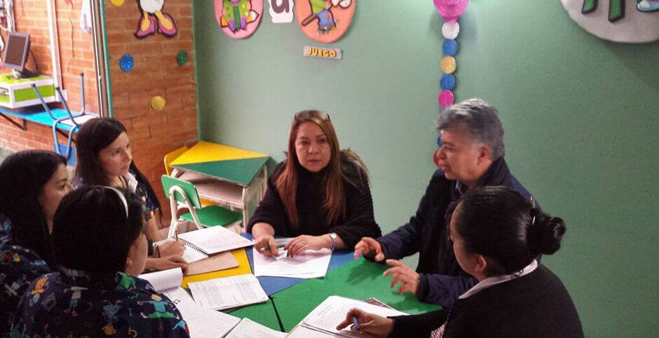
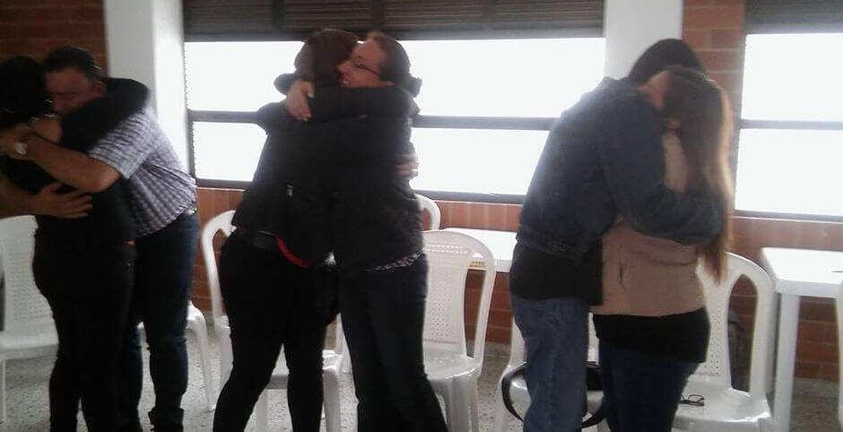
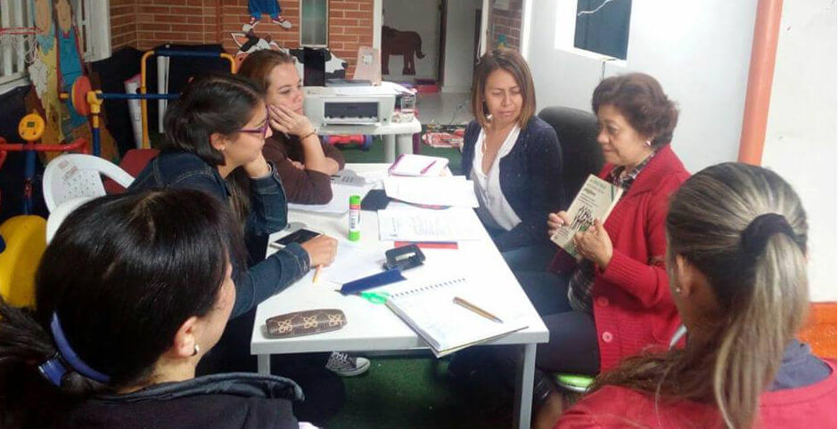
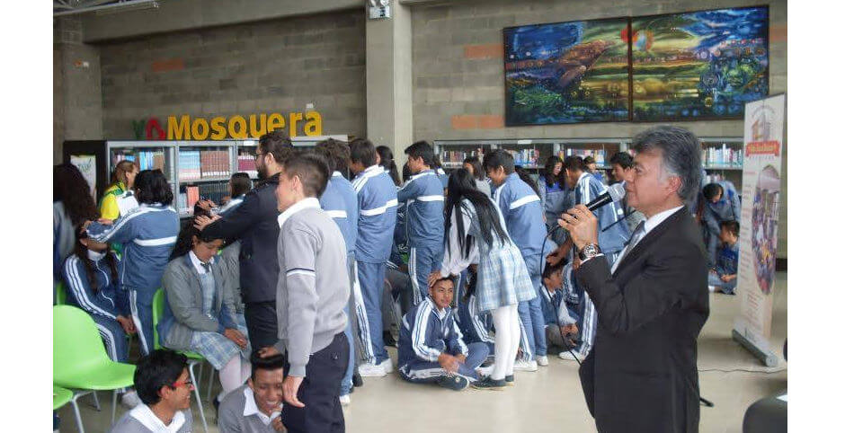
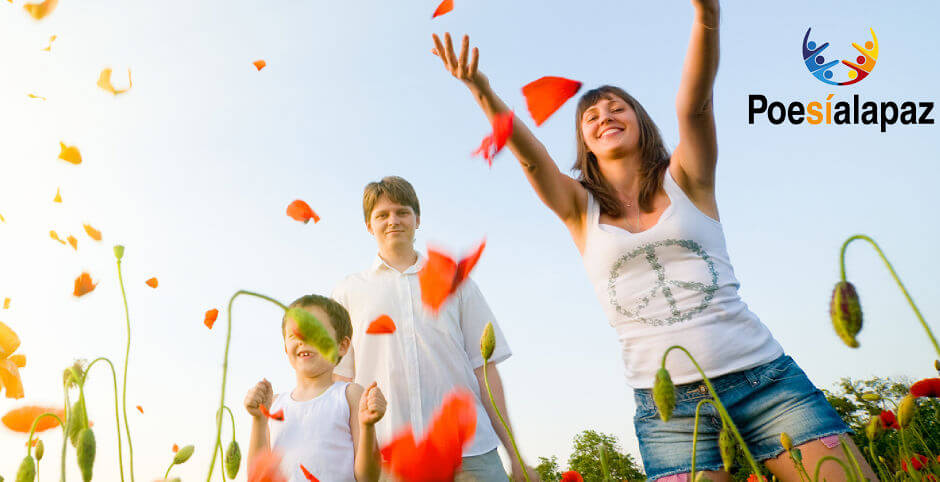
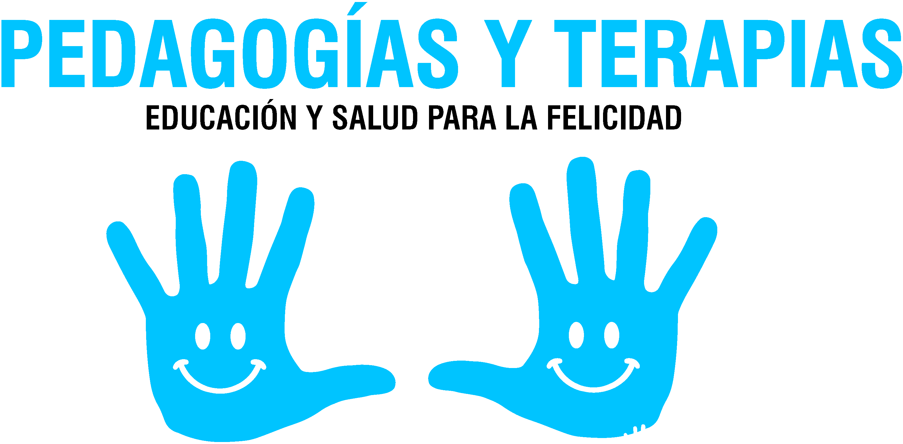

El sentido fundamental de la educación es despertar el amor por la vida y aprender a ser feliz. Asombro inocencia y curiosidad, son cualidades del niño que debemos conservar los adultos.

Raúl Guzmán González, Director General de Pafmi en reunión con la Directora del Jardín Infantil Chiquitoto y las profesoras, en la reflexión institucional de las prácticas pedagógicas para "El reencuentro, la reconciliación y la paz".

Abrazarnos es un juego que consiste en celebrar el encuentro de nuestros brazos. En el acto de unirnos, atrapamos un instante que nos hace sentirnos humanos.

Luz Elena Guzmán González, directora de Educación - Pafmi en el Jardín Infantil Jaibana, realizando el taller de Liderazgo en el rol docente.

Lo fundamental de la vida es el gozo de aprender, saborear el instante, dar un paso más en el conocimiento de sí mismo.

“La poesía no es un adorno que acompaña la existencia humana, ni solo una pasajera exaltación, ni un acaloramiento y diversión. La poesía es el fundamento que soporta la historia, y por ello no es tampoco una manifestación de la cultura, y menos aún la mera expresión del alma de la cultura” Heidegger.
Quienes Somos

Nos definimos como un sistema integral de formación humana alternativo, que fomenta una cultura de la felicidad y busca despertar inspiración, contribuye a clarificar finalidades y a darle sentido a la vida.
Nacemos de la interdisciplinariedad orientada hacia la ética y estética del cuidado que se manifiesta en el conocimiento de sí mismo, del otro, de la naturaleza y la cultura en sus diversas manifestaciones, mediante la articulación del amor a la sabiduría con la existencia misma.
Misión
PAFMI es una institución de raíces filosóficas y está dedicada a tejer con un mismo hilo de servicio y comprensión del ser, pedagogías y terapias, incentivando transformaciones mentales, actitudinales, sociales y de mejores relaciones con el medio ambiente.
Visión
En nuestra visión 2017 somos:
Una empresa eficiente de asesorías y consultorías en temas de educación y salud, especialmente dirigidas a la primera infancia mediante los Jardines Infantiles y a la humanización del sector salud a través de la Red Hospitalaria.
Un Centro de investigaciones sobre la primera infancia - CEIPI
Un colectivo de poesía, al servicio de la paz – POESÍALAPAZ que contribuye con la formación ciudadana.
La Sigla Pafmi
Pedagogías y terapias de afecto e imaginación, como una filosofía del buen vivir creadora de existencias felices y salud holística, motivada por las inteligencias múltiples y la psicología positiva. Estas corrientes de pensamiento son puntos de referencia de nuestra construcción epistémica aplicada al servicio de la vida.
Principios
Promover el valor esencial de la felicidad para la autorrealización humana.
Fomentar conductas solidarias y diversas formas de resolución pacífica de conflictos.
Contribuir a la gran obra colectiva de un tejido social con hilos de afecto e imaginación creadora, a través del ejercicio frecuente de jugar, escuchar al otro y dialogar.
Conformación Del Sistema Pafmi
Estamos conformados por un equipo de profesionales, magísteres y doctores de reconocimientos académicos en diversas áreas del saber, que propende por un desarrollo de una cultura de la felicidad, contribuyendo con procesos de humanización para que el trato en las relaciones humanas sea tan importante como los avances en ciencia y tecnología.